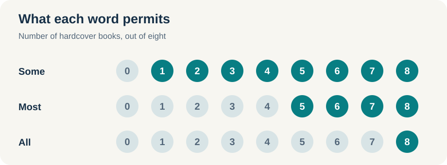
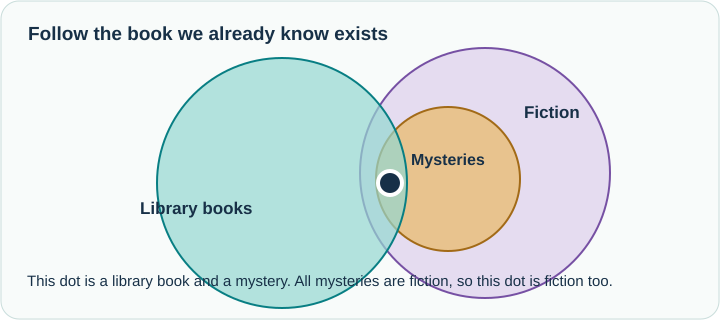
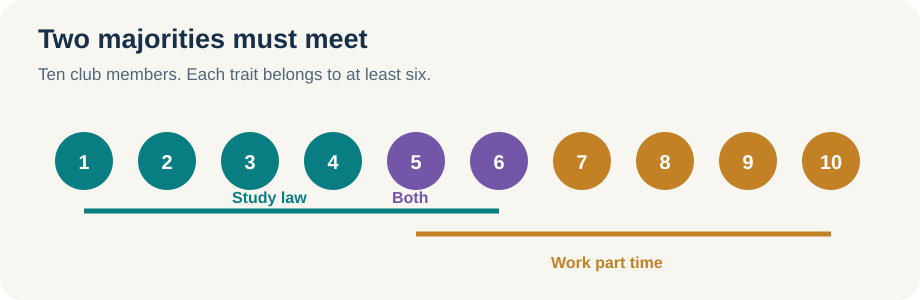
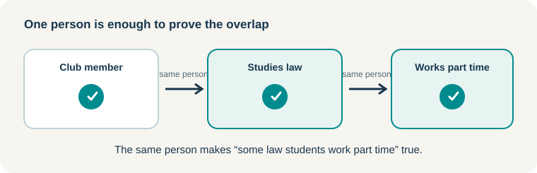
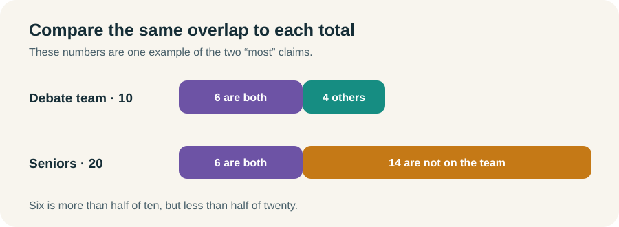
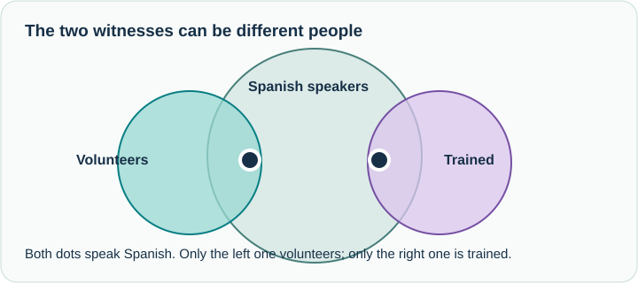

Quantity statements tell us whether a claim applies to some members of a group, most of them, or all of them. Suppose a class has been assigned a case to read. “Some students read it,” “most students read it,” and “all students read it” are three different claims about that same class. We do not need an exact headcount to understand the difference.
For each sentence, ask: What must be true? What could still be true? The answer changes with the word we use.
Some guarantees at least one
Imagine a shelf with eight books. I tell you that some of the books are hardcover. How many hardcover books must there be?
At least one. There could be one, four, or all eight. “Some” rules out zero. It does not rule out “most” or “all.”
This is easy to miss because in ordinary conversation “some” often suggests “some, but not all.” On the LSAT, that extra phrase is not part of the statement. If all eight books are hardcover, it is still true that some are hardcover.
Try it: “Some applicants received an interview.” Could every applicant have received one? Does the sentence tell us that anyone was denied an interview?
Check your answer
Every applicant could have received an interview. The sentence does not tell us that anyone was denied one. “Some” guarantees at least one applicant received an interview, but it leaves open how many others did.
Whenever you read some, replace it with at least one in your head. That tells you exactly what the sentence guarantees:
Some of the books are hardcover.
At least one of the books is hardcover.
Now focus on that one book. It belongs to both groups: it is a book, and it is hardcover. If we describe the same object from the hardcover side, we can say:
Some hardcover items are books.
At least one hardcover item is a book.
We have not found a new object. We have described the same overlap in the other direction. That is why a some statement works both ways:
Books ←some→ Hardcover
The double arrow tells us that at least one thing belongs to both groups. It does not tell us that every book is hardcover or that every hardcover item is a book.
What would make “some” false?
If some books are hardcover is false, then no books are hardcover. There is not even one book in both groups. Notice the difference between no books are hardcover and some books are not hardcover. The second sentence still allows other books to be hardcover, so it does not negate “some.”
Most guarantees more than half
Now I tell you that most of the eight books are hardcover. We need at least five hardcover books. Four would be exactly half, and half is not most. Five, six, seven, or eight could satisfy the sentence.
Notice that all eight could still be hardcover. “Most” does not tell us that an exception exists.
Try it: If most of the eight books are hardcover, must some of them be hardcover? Must any be paperback?
Check your answer
At least five are hardcover, so some are hardcover. No paperback book is required. All eight could be hardcover.
Here is where the direction of the statement matters. From “most books are hardcover,” we know that some hardcover things are books. We cannot say that most hardcover things are books. Five of our eight shelf books could be hardcover, while a library holds hundreds of other hardcover items. The first statement counts the eight books; the reversed statement counts a different group.
Books ─most→ Hardcover
Hardcover ←some→ Books
The first arrow gives the majority claim. The second line is the overlap that the majority guarantees. When we read a most statement backward, the word becomes some.
Quick check: A program has 100 applicants. Most speak Spanish. What is the smallest possible number who speak Spanish? What is the largest?
Show the answer
51 to 100. Fifty is only half. “Most” also permits all 100, so it does not establish an exception.
What would make “most” false?
“Most of the eight books are hardcover” needs at least five hardcover books. Its negation permits four or fewer. Four is exactly half, so it already makes “most” false. The opposite of “most are hardcover” is half or fewer are hardcover, not “most are paperback.” Both kinds could make up exactly half.
All leaves no exception
If all eight books are hardcover, every book on the shelf is hardcover. One paperback on that shelf would make the statement false.
An all statement gives us a rule: if it is one of these eight books, then it is hardcover.
One of these books → Hardcover
Not hardcover → Not one of these books
The second line is the contrapositive. Both lines go with the same rule. We cannot turn the first line around and conclude that every hardcover thing is a book on this shelf.
Try it: You pick up a paperback. What does the rule tell you? What if you pick up a hardcover book from another shelf?
Check your answer
The paperback cannot be one of these eight books. A hardcover book from another shelf does not become one of these eight just because it is hardcover. Being hardcover is required, but it is not enough to identify one of these books.
There is a small qualification. “All A are B” gives a rule about A. By itself, it does not tell us that any A exist. When we already know the group exists, all also guarantees most and some.
What would make “all” false?
One exception is enough. “Not all eight books are hardcover” means at least one of the eight is not hardcover. The other seven could still be hardcover. This is the negation of the all claim. By contrast, “not hardcover → not one of these eight books” is its contrapositive: another way to state the original rule, not a way to deny it.
Put the three statements side by side
The same shelf can help us see the whole range.

Read the implications in one direction:
ALL → MOST → SOME (when the group exists)
If all eight books are hardcover, then most are, and some are. If only “some” is given, all eight could be hardcover, but we cannot conclude that they are. Keep the distinction between a possible situation and a required one.
Carry a claim through an all rule
Now we can combine statements. Suppose some library books are mysteries and all mysteries are fiction. We have at least one book that is a mystery. The all rule applies to every mystery, including that one. So some library books are fiction.
Library books ←some→ Mysteries → Fiction
Library books ←some→ Fiction
The all arrow points away from the mystery group we reached. That is why the chain works. If the second sentence said only “most mysteries are fiction,” the mystery books we found could be among the exceptions.

Quick check: Some archive documents are letters. All letters are handwritten. What follows?
Show the answer
Some archive documents are handwritten. Take a document guaranteed to be a letter. The all rule applies to that document.
The same reasoning preserves the first quantity word:
| First statement | Rule | What follows |
|---|---|---|
| Some library books are mysteries. | All mysteries are fiction. | Some library books are fiction. |
| Most library books are mysteries. | All mysteries are fiction. | Most library books are fiction. |
| All library books are mysteries. | All mysteries are fiction. | All library books are fiction. |
Try it: “Most library books are mysteries. All fiction is mystery.” Can we conclude that most library books are fiction?
Check your answer
No. The all arrow goes from fiction to mystery. We cannot start at mystery and travel backward to fiction.
Two majorities of the same group must meet
Suppose a club has ten members. Most members study law, and most members work part time. Each “most” needs at least six of the ten members. Those two sets cannot fit inside the club without sharing at least two people.

What is given? More than half of the same ten members study law. More than half of those same ten work part time. The claims count club members, not all law students or all part-time workers everywhere.
Why must they meet? Each group needs at least six members. If the groups were separate, we would need twelve different club members. There are only ten. At least two members must be in both groups.
What follows? Some law students work part time. We can reverse that some claim: some part-time workers study law. Both sentences describe the same overlapping members. We know at least one exists; we do not know that most law students or most part-time workers have the other trait.
Given: Most club members study law.
Most club members work part time.
Must follow: Some law students work part time.
Why: Both majorities count the same club members.
Quick check: A club has 25 members. Most are lawyers, and most play an instrument. What is the smallest possible number who are both lawyers and play an instrument?
Show the answer
One. Each majority needs at least 13 members. If none overlapped, those groups would require 26 different people, but the club has only 25. All 25 could also have both traits.
Try it: If most club members study law and most club members work part time, could the two groups of members be completely separate?
Check your answer
No. Two separate majorities would require more members than the club has. At least one member must have both traits.
When all describes that same group
There is another way to guarantee an overlap. Suppose most club members study law, and all club members work part time. We already know there are law students in the club. The all rule tells us that each one of those members also works part time. So some law students work part time.
Given: Most club members study law.
All club members work part time.
Must follow: Some law students work part time.
Why: The law students already found are club members,
so the all rule applies to each of them.
We can make the same move with some. If some club members study law and all club members work part time, take the member guaranteed by “some.” That person has both traits. Again, some law students work part time. The sentences can be stated in the other order: all club members work part time; some club members study law. The same person still proves the overlap.

Try it: All A are B. All A are C. Must some B be C?
Check your answer
Not yet. The two all rules tell us what is true if something is A, but neither tells us that any A exists. Add “at least one A exists,” and the overlap follows.
Two majorities can also compare group sizes
Here is a different comparison. Most debate team members are seniors, but most seniors are not on the debate team. The seniors on the team are more than half of the team and less than half of the seniors. The same overlap takes up a larger share of the team than of the senior class. Therefore, there are more seniors than debate team members.

The numbers in the picture are one possible case. The conclusion follows from the two majority claims, not from those particular numbers.
Similar chains can leave a gap
Two some statements need not describe the same person or thing:
Some volunteers speak Spanish.
Some Spanish speakers are trained.
The trained Spanish speakers could all be people who do not volunteer. We cannot conclude that any volunteers are trained.

Replacing the second “some” with “most” does not fix the gap. The Spanish-speaking volunteers could sit in the untrained minority. Even two most statements that count different groups do not automatically produce a new majority claim.
Before drawing a conclusion, ask: Am I carrying a known group through an all rule? Or do two majorities count the same group? If neither is true, check whether the groups could miss each other.
Quick check: A club has 13 members. Most are women, and some are dancers. How many female dancers are guaranteed? How many are possible?
Show the answer
Zero are guaranteed; as many as 13 are possible. Seven women and one dancer meet the statements even if that dancer is one of the six men. Both traits could also belong to every member. A most claim and a some claim about the same group do not force the two traits to meet.
The moves to keep
| What you have | What you may conclude |
|---|---|
| Some A are B | Some B are A |
| Most A are B | Some A are B, and some B are A |
| All A are B | A → B, and not B → not A |
| Some/most/all A are B; all B are C | The same first quantity of A are C |
| Most A are B; most A are C | Some B are C |
| Most A are B; all A are C | Some B are C |
| Some A are B; all A are C | Some B are C |
Two all claims about A guarantee that every A has both traits. They guarantee some B are C only when we also know that at least one A exists.
Use the sentence behind each arrow to check what it guarantees.
Nearby words need a closer look
The words around a quantity statement can look familiar without making the same promise. Sort them by what they guarantee, then check the sentence in front of you:
| Word or phrase | What it guarantees |
|---|---|
| Some, at least one, one or more | One or more members fit. All may fit too. |
| A few, several, many | A positive number in ordinary use, but no universal cutoff. They imply at least one. |
| Most, more than half, a majority of | Strictly more than half of the named group fit. |
| All, every, each, without exception | Every member of the named group fits. The group may still need a separate existence premise. |
| Few, not many, not often | A small number or low frequency in context. No exact numerical boundary follows. |
| No, none, zero | Not a single member fits. |
| Not all | At least one member does not fit. |
Few is worth separating from a few. “A few books are hardcover” affirms that at least some are. “Few books are hardcover” stresses how small the number is. It often suggests some in ordinary speech, but it does not set a dependable numerical minimum. “Not many” can include zero. A hundred menu items could make five feel like few; in a menu of six, five would not feel like few. Do not quietly replace any of these phrases with a fixed number.
Most is different: it crosses a precise line, more than half. Words such as the majority plainly express that idea. Words such as usually, typically, generally, commonly, frequently, often, likely, and probably can suggest prevalence in context, but pay attention to what the sentence actually counts. “Probably” about one event, for example, is a likelihood claim, not a headcount of a group.
Not all does give us a precise minimum: at least one exception. “Not all club members are lawyers” means at least one club member is not a lawyer. It does not tell us whether the other members are lawyers.
Quick check: A menu lists 100 beers. “Many are Belgian,” “few are Belgian,” and “not many are Belgian” are three claims. Can you assign each one an exact minimum and maximum? What does “not all are Belgian” guarantee?
Show the answer
The first three do not have fixed numerical boundaries. “Many” suggests more than an isolated example, while “few” and “not many” suggest a small number relative to the context. None alone licenses a specific cutoff such as five or ten. “Not all” is exact about one thing: at least one beer is not Belgian.
Pop quiz: decide whether the overlap follows
For each pair, decide whether it guarantees some A are C. Draw a witness or explain where the groups could miss each other before opening the answers.
- Some A are B. All B are C.
- Some A are B. Most A are C.
- All A are B. Some B are C.
- Some A are B. Most B are C.
- Some A are B. Some B are C.
- Most A are B. Most A are C.
- All A are B. All A are C.
Show the worked answers
- Yes. The A that is B must also be C because every B is C.
- No. The A that is B could be outside the majority of A that is C.
- No. The B that is C could be outside A. The all rule runs from A to B, not back from B to A.
- No. The known A that is B could be among the B that are not C.
- No. The B in the first statement could differ from the B in the second.
- Yes. Two majorities of the same A group must share at least one member, who is both B and C.
- Not from these statements alone. Every A would be both B and C, but the statements do not establish that an A exists. If at least one A exists, the answer becomes yes.
“No” here means no guaranteed A–C overlap. The premises may still imply a different, smaller fact. For example, statement 3's “some B are C” is already given.
Short drill: diagram, combine, decide
Here are five statements about one volunteer program. Volunteer, Spanish speaker, trained person, weekend worker, and student name groups of people. Treat each sentence as true.
- Some volunteers speak Spanish.
- All Spanish speakers are trained.
- Most volunteers work weekends.
- Most volunteers are students.
- Most weekend workers are trained.
First, diagram each statement. Then answer these without looking below:
- Which two statements prove that some volunteers are trained?
- Which two statements prove that some students work weekends?
- Do statements 3 and 5 prove that most volunteers are trained? Explain the gap or draw a counterexample.
- Can you write either valid some conclusion in the reverse order?
Show the diagrams and worked answers
1. Volunteers ←some→ Spanish speakers
2. Spanish speakers → Trained people
3. Volunteers ─most→ Weekend workers
4. Volunteers ─most→ Students
5. Weekend workers ─most→ Trained people
1. Statements 1 and 2. At least one volunteer speaks Spanish. Every Spanish speaker is trained. That volunteer is trained, so some volunteers are trained.
2. Statements 3 and 4. Both majorities count the volunteers. The weekend workers and students must share at least one volunteer. So some students work weekends.
3. No. Statement 3 says most volunteers work weekends. Statement 5 counts all weekend workers, a different group. The volunteers who work weekends could be among the untrained weekend workers. Nothing requires most volunteers to be trained.
4. Yes. A some statement describes an overlap in either direction: some trained people are volunteers, and some weekend workers are students.